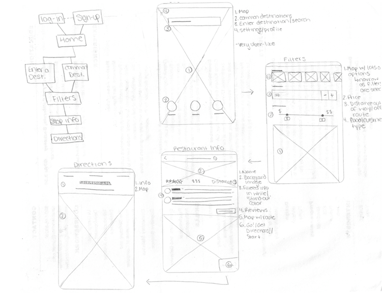
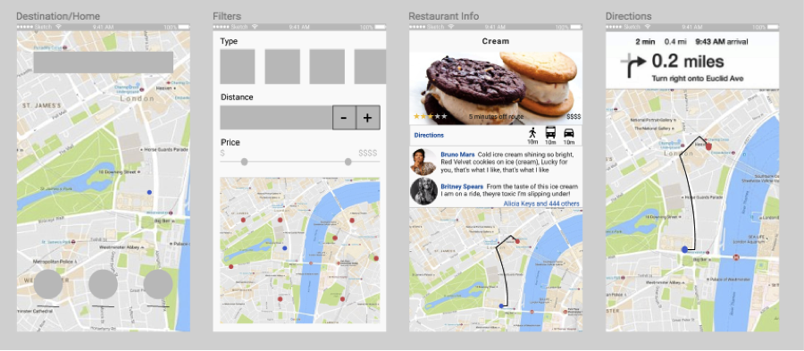
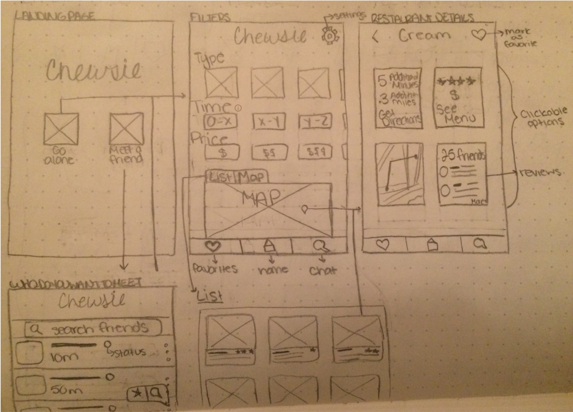

Sarah Tencher
Chewsie
How might we make it easier to find good restaurants on ones route? People need a convenient way to find new places to eat on the go and most people tend to want that place to be on their way to their final destination. Similarly, when meeting someone for a meal, it is unnecessarily difficult to find a great place that both parties are happy with that is also somewhere in between. Chewsie attempts to solve these problems by providing convenient routes through selected food options, as well as routes to meeting places between connected friends.
Goals and Research
The goals of this project are to provide a way to help users discover new restaurants, help users find convenient routes, and allow users to socially connect with others over meals and restaurants. Using personas and storyboards, I explored the space my design might operate in and discover user needs that features could address. Through user interviews, I aimed to determine what people look for when deciding where to eat. Asking questions about how they currently find restaurants, as well as how they view and write restaurant reviews, led to key insights that drove the rest of the design process, including:
- • people tend to dislike going out of their way
- • people value quality of food and convenience
- • most people do not want to commute longer than 10-15 minutes to find a place to eat
- • people tend to generally know what kind of food they want, it's just a matter of finding a place that serves that type of food
- • people trust their friends more than strangers
Low-Fidelity Sketches
Using key insights from user interviews, I began sketching very simple user flows and app screens to use to test the core functionality and features.
Using paper prototypes I gave participants the task of finding a place to eat along their route home. Through this first round of user testing, I learned that people seemed to appreciate visuals such as maps, icons, and images over just plain listed text. I also gathered that the overall workflow and navigation between pages was not as intuitive as I thought and needed to be revised in the next iteration.
Mid-Fidelity Prototype
To remedy navigation issues between pages, I added clear labels such as ‘Directions’, as seen on the third screen above. This is a style very similar to that used in Apple Maps, and since that is a familiar application, users did not have any difficulty in understanding its purpose and use. I also used actual maps with locations plotted on them in this prototype to better indicate to users the purpose of the filters.
I used InVision to test this prototype with users and received valuable feedback both about usability and aesthetic design. Users found some of the wording confusing, mainly the 'Distance' filter. The purpose of this filter is to select the amount of time off of the optimal route to their destination the user is willing to go to get food. Simply using the label 'Distance' was too ambiguous and needed further attention.
The navigation issues from the initial iteration persisted, making me realize that there was a fundamental usability issue that I had not adequately addressed. Instead of creating a high-fildelity prototype at this point, I decided to create another low fidelity prototype to try and provide a better way for users to navigate through the app.
Low-Fidelity Prototype (Round 2)
By going back to pencil and paper, I was able to really focus on the elements that I felt were core and essential to Chewsie, including the ability to navigate between screens, as well as easily filter their restaurant, time and price options. I also aimed to simplify the presentation of information in 'restaurant details' in order to make it more digestable and usable for users. In order to remedy the confusion about the time and distance filters, I decided to place an information icon next to this category that will provide a tool-tip explaining exactly what this filter represents.
I also wanted to take this opportunity to flesh out an additional feature, the ability for users to connect with friends. Ideally, this feature determines the distance between two users and presents filters for selecting a restaurant somewhere between them. This feature exemplifies the social aspect of the app which really differentiates it from similar apps like Yelp. A new landing page with two options, "Go Alone" or "Meet a Friend", was the best way to present the different use cases.
Future Directions and Reflections
My immediate next step is to test this low fidelity prototype with users again before begining any visual designing. There are still a lot more details to work out and I look forward to conducting more research and refining the product even further. I hope to especially focus on the 'Meet a Friend' use case, including messaging and perhaps a conclusive way for each user to know which restaurants the other is considering within a reasonable radius.